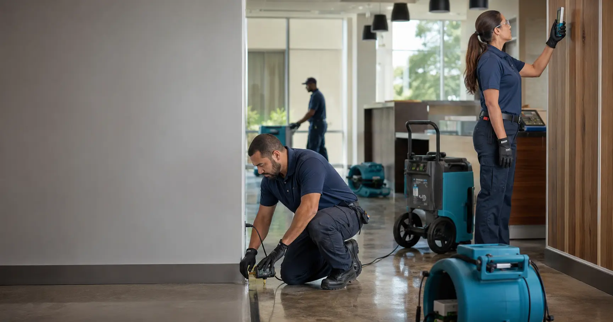
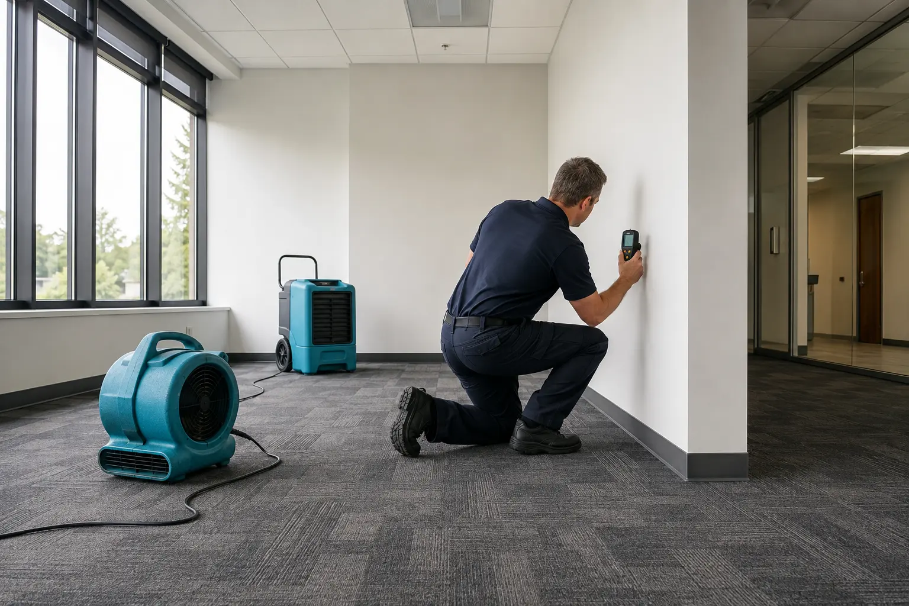

Water damage restoration
Emergency extraction, structural drying and documented recovery.
Explore the service →One trusted restoration group serving South Florida and the Atlanta area with experienced local teams, proven methods and clear communication.

Emergency extraction, structural drying and documented recovery.
Explore the service →Assessment, cleaning, odor control and complete property restoration.
Explore the service →Source control, containment, professional remediation and review.
Explore the service →
Each case study connects the original problem, WRG’s response, the assigned office, the service performed and the expert who reviewed the result.
WRG combines approximately two decades of restoration experience with staffed offices in Miami, West Palm Beach and the Atlanta area. Every location follows the same standards while maintaining its own local facts, service coverage and project evidence.
Meet the local teams →